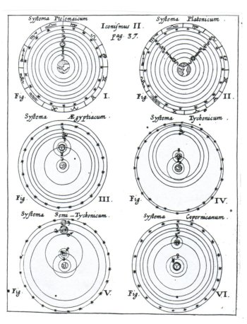
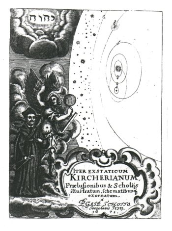

Inhoudsopgave
De musica mundana Inhoudsopgave
De musica mundana  Besluit
Besluit
Iter exstaticum coeleste
Hoewel Joscelyn Godwin over de Iter exstaticum
coeleste opmerkt: ‘Kircher’s story is a Catholic Dream of
Scipio’(1), is er een groot
verschil met Scipio’s droom: nergens is er in dit werk sprake van
‘het zo grote en zoete geluid’ dat Scipio hoort wanneer hij met
zijn grootvader door het wereldruim zweeft; nergens merkt Kircher op dat hij
een ‘groot en zoet’ geluid hoort.
Ofschoon Kircher (in het boek
Theodidactus - door God onderwezen - geheten) onder begeleiding van de
engel Cosmiel door hetzelfde wereldruim reist als Scipio en hij zich
verwondert bij de aanschouwing van God’s werken aldaar, gebeurt dit in
stilte, slechts onderbroken door het gesprek tussen Theodidactus en
Cosmiel.
I
Iter exstaticum coeleste verscheen onder deze titel
pas in 1660 (te Würzburg), want oorspronkelijk was het in 1656 te Rome
verschenen onder de titel: Itinerarium exstaticum quo mundi ... siderumque
... natura ... vires ... proprietates, singulorumque compositio et structura
explorata; maar de herdrukken die het populaire werk beleefde, ontvingen
van Kircher’s leerling Caspar Scott (bij gelijkgebleven inhoud) de nieuwe
titel.(2)
Het werk bestaat uit ongeveer 700 (quarto) pagina’s en is opgebouwd uit
twee delen: Iter exstaticum I (p. 1-513) en Iter exstaticum II
(p. 514-684). Het tweede deel is wat betreft de hemelse muziek weinig
interessant: hierin bespreekt Kircher de eigenschappen van de aarde, dus van
het ondermaanse.(3)
Veel interessanter is Iter exstaticum I, dat net als II is opgebouwd uit
dialogen tussen Theodidactus (Kircher zelf) en de engel Cosmiel. Iter
exstaticum I bestaat uit drie delen: een aantal voorwoorden (waarover zo meer);
Dialogus I, hierin vindt de eigenlijke reis door het wereldruim plaats
en ik zal dan ook voornamelijk naar deze dialoog mijn aandacht laten uitgaan;
en tenslotte Dialogus II - De providentia Dei in Mundi opificio
elucescente.
In deze tweede dialoog bespreekt Theodidactus met Cosmiel wat zij in het
voorgaande beleefd hebben, het is een ‘theoretisch’ deel: zij
spreken bijvoorbeeld over hoe de wereld ontstaan is (Caput I - De
productione Mundi, p. 365; niet verwonderlijk is de getrouwe navolging van
het scheppingsverhaal uit Genesis), over de afstanden tussen de verschillende
hemellichamen (Caput IV - De distantiis corporum mundanorum, tum inter se,
tum ad Terram comparatis; in quo mira divinae providentiae ratio elucet. p.
365), of over het doel waarmee de wereld geschapen is (Caput XI - Finis ob
quem DEUS Mundum condiderit; et de Christi incarnationem; et de Ecclesia, et
fide, per quam DEUS homines servare voluit. p. 451). In deze tweede dialoog
worden alle, in het voorgaande deel waargenomen, fenomenen theologisch geduid:
alles wat is, is door God geschapen, is geschapen om hem te eren. De mens kan,
zonder ooit volledig begrip te verwerven, slechts vol verwondering in deze
schepping aanwezig zijn.
Op een enkele plaats wordt in dit deel muziek als metafoor gebruikt:
bijvoorbeeld in hoofdstuk 4(4) worden
de bewegingen van de planeten met omhoog- of omlaagbewegingen van tonen in de
veschillende modi (dorisch, phrygisch etc), of de mutatie van de ene naar de
andere modus vergeleken; maar aangezien dit deel zich niet in het wereldruim
afspeelt, valt het ook enigzins buiten deze beschouwing.
II
Het verhaal van een reis door het hemelruim in Iter
exstaticum coeleste is in feite de raamvertelling waarbinnen Kircher de in
zijn tijd bekende kennis over de hemel plaatst. Dit blijkt al uit de
voorwoorden (of ‘voorspel’, Praelusio, zoals Kircher deze
noemt) waarmee Iter exstaticum opent: na een tweetal voorwoorden (een aan de
welwillende lezer, de ander aan de astronoom(5)) besteedt Kircher 20 pagina’s (p. 19-39) aan een
uiteenzetting over de stand van zaken in de astronomie.
Deze uiteenzetting is in zoverre interessant dat hij, hoewel
hij nadrukkelijk spreekt over een ‘katholiek voorspel voor de
geleerde’(6), ook niet-katholieke
zaken als de theorieën van Copernicus of de ontdekkingen van Galileo
bespreekt. Over het aantal sterren zegt Kircher bijvoorbeeld: ‘Indien je
met de blote ogen kijkt, blijkt het aantal sterren bij de eerste aanblik
ontelbaar te zijn, en wanneer je met de ’optische buis’(7) kijkt blijken er nog veel meer te zijn
...’ (Stellarum fixarum numerus videtur esse innumerabilis primo
aspectu, si nudos oculos, et multo magis si tubo optico ... .(8)). De eerste die deze observaties deed
was Galilei Galileo, een andere ontdekking van Galilei was: ‘Dezelfde
observeerde dat de Galaxis, of de Melkweg genaamd, niets anders is dan een
opeenstapeling van een ontelbaar aantal sterren.’ (Idem [Galilei]
observavit Galaxiam seu Viam lacteam nihil aliud esse quam innumerarum
stellarum coacervationem.(9)).
Tijdens deze uiteenzetting komt Kircher ook te spreken over de verschillende
systemen waarmee men de hemel heeft willen duiden. Dit zijn er zes volgens
Kircher (zie afbeelding 36): het
Ptolemaïsche, het Platonische (verschilt van voorgaande in de plaatsing
van de zon), het Egyptische (mercurius en venus bewegen om de zon), het systeem
volgens Tyho Brahe, een afgeleide daarvan en het systeem van Copernicus.(10) Over dit laatste systeem zegt hij
het volgende:
‘Dit systeem wordt het Copernicaanse genoemd, het is
door de Pruis Nicolaas Copernicus eindelijk voltooid, Copernicus die dit
systeem, dat vroeger gedeeltelijk bedacht is door Philoloas de
Pythagoreeër en Aristarchos van Samos, en vervolgens door Nicolaas Cusanus
weer opgewekt is(11), bovendien met
vele argumenten en ingenieuze hypothesen heeft versterkt; bijna alle
niet-katholieke mathematici hebben hem vervolgens nagevolgd, maar geen van de
katholieke, bij wie natuurlijk wel de inborst en de pen jeukt om met deze
nieuwigheden te sjacheren.’ (Hoc systema dicitur, Copernicanum, a
Nicolao Copernico Borusso, qui illud olim ex parte excogitatum a Philolao
Pythagorico, et Aristarcho Samio, ac deinde resuscitatum a Nicolao Cusano,
tandem perfecit, ac pluribus argumentis ingeniosisque hypothesibus fulcivit;
quem deinde secuti sunt pene omnes Mathematici Acatholici, et nonnulli ex
Catholicis, quibus nimirum ingenium et calamus prurit ad nova venditanda.(12)).
| afb. 36
‘Zes universa', IEC., tussen p. 36 en 37 | | Opvallend is dat er op geen
enkele wijze een dialoog met de afwijkende meningen wordt gevoerd, maar dit was
(en is) nu eenmaal niet ongebruikelijk. Kircher vervolgt eenvoudigweg met de
constatering dat het katholieke systeem dat van Tyho Brahe is (Systema
nostrum et Kircherianum, idem est cum Tychonico.(13)).
Opvallend is ook nadruk die Kircher legt op de afwijzing van
Copernicus en op de juiste, kerkelijke, opvattingen over het universum: hij
besteedt ruime aandacht aan een poging mogelijke kritiek voor te zijn,
bijvoorbeeld in gedeelten als Auctoritates quibus Mundi hypothesis in hoc
Opere explanata confirmatur (‘De autoriteiten waardoor de hypothese,
die in dit werk uitgelegd wordt, bevestigd wordt’ p. 478 e.v.) en
Apologeticon contra censuram ... (p. 485 e.v.). Het proces dat de Kerk
tegen Galilei voerde was weinig meer dan twintig jaar oud (1633) en
waarschijnlijk was Kircher hierom (en omdat hij als Jezuïet nadrukkelijk
de leer van de Kerk uitdroeg) zo dogmatisch. |
Het aspect ‘raamvertelling’ is nog veel sterker
aanwezig in Dialogus I, de feitelijke reis door het wereldruim: elke
etappe van de reis (van de aarde naar de maan, van de maan naar venus etc.,
totdat uiteindelijk het firmament wordt bereikt) wordt voorafgegaan door een
uitwijding (praelusio) over de eigenschappen van de eerstvolgende
halteplaats. Zo worden in de Praelusio in Lunam bijvoorbeeld de
maanvlekken (met het oog waarneembare lichte en donkere gedeelten op de maan)
en hun oorzaken besproken(14);
hetzelfde geschiedt telkens voordat zij het volgende hemellichaam bereiken.
Niet alleen in deze voorspelen wordt veel (zoniet bijna alle) ruimte besteed
aan wetenschappelijke kennis omtrent het wereldruim, ook in de daadwerkelijke
hoofdstukken betreffende de reis heeft Theodidactus eigenlijk alleen aandacht
voor de verschillen of overeenkomsten tussen hetgeen hem uit zijn studies
bekend is over het heelal en de diverse hemellichamen, en hetgeen hij onder
leiding van Cosmiel mag ervaren. Theodidactus pendelt heen-en-weer tussen
kennis en ervaring, waarbij telkens de ervaring (uitgelegd door Cosmiel) nieuwe
kennis verschaft; met andere woorden: er is een sterk didactisch kader aanwezig
(waar ook de dialoogvorm, sinds Plato al didactisch verantwoord, op wijst).
Kircher wil de lezer, geschoold in astronomie of niet, een verantwoord,
katholiek wereldbeeld onderwijzen. Iter exstaticum is in feite een
populair wetenschappelijk werk.(15)
III
De feitelijke aanleiding voor Kircher’s (Theodidactus) hemelreis was
de volgende:
‘Het gebeurde niet zo lang geleden dat ik in de
academie uitgenodigd werd om een privé-uitvoering van drie
onvergelijkelijke musici (als ik hen de Orfeuzen van onze tijd zou noemen, zou
dat nauwelijks bij de waarheid passen) bij te wonen.’ (Accidit non ita
pridem, ut ad academicum trium incomparabilium Musicorum (quos si aevi nostri
Orpheos dicam, minime a vero abludam) exercitium privatos inter parietes
institutum vocarer.(16)).
Theodidactus (Kircher) is uitgenodigd om een concert(17) te komen beluisteren, en tijdens
dit concert wordt hij zozeer door de muziek bewogen, door de op- en neergaande
bewegingen van de melodieën, door de chromatiek, door de harde en zachte
noten, dat hij meent dat zelfs de echte Orpheus, Terpander, of een van de
andere bekende klassieke musici nooit een zo geweldige muziek zouden hebben
kunnen maken (net als Johannes Kepler is Kircher overtuigd van de superioriteit
van de muziek van zijn eigen tijd).(18)
Maar de muziek is niet alleen prachtig, het brengt hem
ook in een meditatieve stemming, waarin hij God’s schepping en haar
wetten overdenkt:
‘Derhalve werd mijn geest, dronken door deze
onvergelijkbare, weldadige samenklanken, in de buitengewone harmonie van de
hemellichamen meegevoerd. Hier beschouwde ik de wetten van overeenstemming en
afwijking van alle en de afzonderlijke lichamen van deze wereld, en bevond ik
dat zij zo verordend zijn, dat terwijl de afzonderlijke consonanten met
dissonanten overlopen, alles toch in alles tot de instandhouding van de
bedoelde harmonie van het universum samenwerkt.’ (Hac itaque
incomparabili sane symphonia delibutus animus, exotico quodam affectu in
mirificam coelestium globorum harmoniam rapiebatur. Hic omnium et singulorum
hujus mundi corporum consensuum dissensuumque leges contemplabar ita ordinatas,
ut dum singula consona dissonis abundent, omnia tamen in omnibus ad
conservationem Universi intendam harmoniam conspirare reperirem.(19)).
En terwijl hij zo in gedachten verzonken is, verschijnt hem
plotseling een man met een wonderbaarlijk uiterlijk, wiens hoofd en gezicht
straalden met een stralend licht, ogen rood als robijnen, en op bijzondere
wijze gekleed. In zijn rechterhand droeg hij een bol, waarin alle bewegende
banen van de sterren door gekleurde en kostbare stenen werden uitgedrukt; in
zijn linkerhand droeg hij een staf (dezelfde attributen als op de titelpagina,
zie afbeelding 42). Dit is de engel Cosmiel, van wie Theodidactus behoorlijk
schrikt: hij krijgt hartkloppingen en kan niet meer spreken. Cosmiel echter is
hem goed gezind:
‘Sta op, vrees niet,
Theodidactus, zie, je verlangens zijn gehoord en ik ben naar je gezonden, opdat
ik je de hoogste majesteit van God, de allerhoogste, zoveel als maar toegestaan
is aan sterfelijke ogen, in zijn wereldse werken toon. ...
De bol die je ziet, betekent het garnizoen van de sterrenwereld; de met stenen
versierde staf, waarmee wij, volgens de wetten door God voorgeschreven, alles
meten, en in de allersierlijkste harmonie ordenen.’
(Surge, ne timeas, Theodidacte, ecce exaudita sunt
desideria tua et ego ad te missus sum, ut tibi summa Dei Optimi Maximi
Majestatem, quantum humano oculo in hac mortali carne constituto permissum est,
in operibus suis mundanis elucescentem monstrarem. ... sphaera quam vides,
siderei Mundi praesidium signat; baculum gemmeus, quo juxta leges a Deo
praescriptas omnia mensuramus, et in concinnissimam harmoniam disponimus.(20)) | | 
afb.
34 Titelpagina Iter exstaticum coeleste (IEC.). Würzburg,
1660. |
Cosmiel is aan Theodidactus gezonden vanwege zijn verlangen
de schepping beter te leren kennen (een verlangen dat hij in het eerste
hoofdstuk heeft uitgesproken, vandaar ook desideria tua) en Cosmiel zal
deze hem tonen. Dit nu, is precies wat er gebeurt: Cosmiel toont Theodidactus
allerlei wonderbaarlijke zaken, maar laat hem niet luisteren. Iter
exstaticum coeleste is visueel georiënteerd.
Met de introductie van de twee hoofdpersonen kan het verhaal
een aanvang nemen, in het volgende hoofdstuk begeven zij beiden zich dan ook
omhoog, de hemel in; maar dit is niet meer dezelfde dag, de droom, of beter
gezegd, het visioen dat Theodidactus kreeg terwijl hij naar de muziek
luisterde, zette zich de volgende nacht voort.(21) Cosmiel verschijnt en leidt hem ‘boven alle
toppen van de aardse massa’s, boven alle ankerplaatsen van de wolken, in
de hoogste lucht waar de hemelverschijnselen optreden, de aether.’
(supra omnia terrenae molis cacumina, supra omnes nubium stationes, in
aetheris sublimia perduxit.(22)).
Nergens klinkt geluid. Het is koud, stil en er is geen lucht. Theodidactus is
bang, bang vanwege het feit dat het zo koud is en omdat hij geen adem kan
halen. Na gevraagd te zijn antwoordt Cosmiel Theodidactus dat er geen warmte is
‘omdat wij buiten de reflecties van de zonnestralen zijn’(23) en ook is er geen lucht
‘opdat de mens hier niet zou leven’(24). Maar gelukkig hoeft Theodidactus, vanwege zijn
begeleiding, niets te vrezen. Vervolgens begeven zij zich naar de maan en
daarop reizen zij van planeet naar planeet, waarbij Theodidactus telkens vragen
stelt, die Cosmiel op zijn beurt beantwoordt.
Uiteindelijk komen zij zo bij het firmament waarin de vaste sterren hun plaats
hebben. Maar om daar te komen moeten zij een grote afstand afleggen, een
afstand die Cosmiel met grote snelheid overbrugt, waardoor Theodiactus bevreesd
raakt: ‘Waarheen voer je me, Cosmiel? Waarheen word ik met een zo
onuitsprekelijke snelheid bewogen?’ Cosmiel verzekert hem dat zij niets
te vrezen hebben en ook dat hij zich niet hoeft te verbazen, want zij bewegen
‘niet met een menselijke, maar met de snelheid van een engel, waarmee
vergeleken alle natuurlijke snelheid langzaam is’.(25)
Nadat Theodidactus ook het firmament aanschouwd heeft, is zijn verlangen om te
leren kennen ten volle vervuld: ‘Hou op, hou op, beste Cosmiel, ik
verlang niets meer te zien, want ik vrees dat ik door de te grote majesteit van
de glorie van de Schepper verpletterd zal worden.’ (Cessa, cessa, mi
Cosmiel, nihil amplius videre desidero, timeo enim ne a nimia majestate gloriae
Conditoris oprimar ....(26)).
Toch is dit alles, alle verhandelingen over astronomie, over
eigenschappen van de hemellichamen enzovoorts, niet de hoofdzaak van dit boek.
Veel belangrijker dan welke kennis ook is het besef van de onmetelijke
grootheid van de schepping. Kennis is belangrijk en waard om nagestreefd te
worden, maar de mens zal nooit de volledige omvang van God’s werk kunnen
bevatten. Slechts bewondering is passend, ja zelfs verplicht.(27)
Theodidactus besluit zijn reis, de eerste dialoog met
Cosmiel, in dezelfde gemoedsstemming als waarin Musurgia Universalis
wordt besloten, namelijk met een gebed en een oproep aan de mens God te eren:
‘... beschouw hem, hij die het centrum van onze geest,
het centrum van de wereld, het doel en de uiteindelijke gelukzaligheid is; hij
die derhalve in altijddurend gezegend is, zonder einde geliefd, zonder grenzen
geprezen in eeuwigheid. Amen.’ ([...] illum contemplemini qui est
centrum animae nostrae, centrum universae naturae finis et ultima beatitudo;
qui proinde sit in aeternum benedictus, sine fine amatus, sini termino laudatus
in secula. Amen.(28))
1. Joscelyn Godwin,
‘Athanasius Kircher and the Occult’ loc. cit. p. 30 (terug naar tekst)
2. Zie
hierover Ulf Scharlau, Athanasius Kircher. p. 61-62 (terug naar tekst)
3. Iter
exstaticum II is opgebouwd uit drie dialogen: na een Praefatio ad
Lectorem (p. 514 e.v.) bespreekt Kircher (als Theodidactus met Cosmiel) in
achtereenvolgens: Dialogus I - De elementa Aquae, et universali rerum
principio (p. 528 e.v.), Dialogus II - De admirandis Geocosmi siue
Terrestris Mundi arcanis (p. 555 e.v.), en Dialogus III - Iter
exstaticum in Mundum Subterraneum (p. 628 -eind) de verschillende elementen
en eigenschappen van deze aarde. (terug naar
tekst)
4. Zie Iter exstaticum coeleste
(IEC.), p. 396: ‘De mira harmonia planetarium’
(‘Over de wonderbaarlijke harmonie van de planeten’) (terug naar tekst)
5.
‘Praefatio Scholiastae ad Benevolum Lectorem’, IEC.
p. 1-11; en ‘Praefatio Auctoris ad studiosum coelestis Philosophiae
Lectorem’, IEC. p. 11-19 (terug naar
tekst)
6. De volledige titel luidt:
‘Praelusio Catholica Scholiastae, siue Isagoge Astronomica pro
Tyronibus; quo Mundi constitutio, mundanorumque corporum dispositio, ordo,
natura, proprietatis, summatim exponuntur variaque Mundi Systemata
explicantur.’ IEC., p. 19-39 (terug naar
tekst)
7. Men noemde het pas uitgevonden
hulpmiddel om de hemel te bekijken nog geen ‘telescoop’; hoewel
Kircher, opmerkelijk genoeg, in MU. (II, p. 389) wel over een
‘astroscopus’ spreekt (‘sterrenkijker’). (terug naar tekst)
8. IEC.,
p. 24: paragraaf 2, ‘De stellis coeli siderei, earumque nummero et
differentiis’ (terug naar tekst)
9. Ibid., p. 25 (terug naar
tekst)
10. Zie over deze verschillende
systemen ook: E.J. Dijksterhuis, De Mechanisering van het Wereldbeeld.
(over het ‘egyptische’ systeem, zie p. 322) (terug naar tekst)
11. Philolaos
was een tijgenoot van Plato, door E. Franck (Plato und die sogenannte
Pythagoreer.) met de natuurwetenschappelijke ontdekkingen bedeeld die aan
Pythagoras werden toegeschreven; Aristarchos was een filosoof uit de
alexandrijnse school, die stelde dat de aarde rond was. Zie Albert Van Helden,
Measuring the Universe. p. 4 e.v. Cusanus draagt verantwoordelijkheid
voor (naast de docta ignorantia, waar Kircher een exponent van lijkt te
zijn) de introductie van het oneindige heelal, een instelling die Alexandre
Koyré (From the Closed world to the Infinite Universe. bijv. p. vii
e.v.) als de oorzaak voor het einde van het oude wereldbeeld houdt, maar zie
ook hoofdstuk 1. (terug naar tekst)
12. IEC., p. 38: paragraaf 9, ‘De variis
Mundi Systematibus’. (terug naar
tekst)
13. Ibid., margine p. 38-39
(terug naar tekst)
14.
Quid sint maculae antiquae et novae in Luna. IEC., p. 66 (terug naar tekst)
15. Over
Iter exstaticum coeleste werd door Christiaan Huygens gezegd: ‘if
Athanasius Kircher had dar’d freely to speak his mind, he could have
afforded us other-guess things than these’ (C. Huygens, The celestial
worlds undiscovered. London, 1658), geciteerd naar John Fletcher,
‘Athanasius Kircher: a man under pressure’ loc. cit. p. 4.
Kircher’s ideeën in dit werk waren, met andere woorden, van nogal
lichte aard, zoals Huygens lijkt te bevestigen. (terug
naar tekst)
16. IEC., p. 72 (terug naar tekst)
17. Kircher
deelt ook mee wie dit waren: Nomina eorum sunt Michaël Angelus Rossus,
Laelius Chorista, Salvatore Mazzellus, quos omnes novi. (‘Hun namen
waren ... die ik alle heb gekend’. IEC., p. 77). Ulf Scharlau zegt
over hen: ‘Michelangelo Rossi, wohl der Bekannteste der drei, war zu
seiner Zeit als Instrumentalist berühmter denn als Orgelkomponist, als der
noch heute ein Begriff ist. Lelio Colista galt als der berühmteste
Theorbenvirtuose Roms; Kircher bezeignet ihn als vere Romanae Vrbis
Orpheus (MU. I, 480). Salvatore Mazzella ist heute vergessen.’
Zie: ‘Athanasius Kircher und die Musik um 1650’ loc. cit. p.
63 (terug naar tekst)
18.
Zie over dit fragment (IEC., p. 72-73) en het belang ervan voor een
beter begrip van de musica pathetica (en in het algemeen de affectenleer
van de barok) ook Ulf Scharlau, ‘Athanasius Kircher und die Musik um
1650’ loc. cit. p. 63-64 (terug naar
tekst)
19. IEC., p. 73. ‘Omnia
in omnibus’ (I Corinthiërs 15:28) in dit citaat oftewel
‘alles in allen’ (NBG) kan ook ‘alles in alles’
betekenen. Het is niets anders dan een formulering van de zgn.
‘volkomenheidsleer’, waarmee Kircher’s werk doordrongen is.
Ook bij Robert Fludd is deze leer aanwezig, maar daar is God niet in,
maar tussen (infra) alles, omdat hij nergens door bevat kan worden (zie
hoofdstuk 2). (terug naar tekst)
20. IEC., p. 74 (terug naar
tekst)
21. Ibid., p. 77:
‘Somnium Auctoris, de quo in praefatione supra mentionem feci,
contigit, ni fallor, nocte proxima a dicta concertione.’ (terug naar tekst)
22.
Ibid., p. 77 (terug naar tekst)
23. Ibid., p. 78: (Cosmiel): ‘[...] causa
frigoris est, quia extra reflexionis radiorum solarium constituti
sumus.’ (terug naar tekst)
24. Ibid., p. 78: (Cosmiel): ‘Ne mireris, in
aethere constituti sumus, cujus natura adeo subtitilis est, ut non possit homo,
nisi coelitus corrobatus, hic vivere.’ (terug
naar tekst)
25. Ibid., p. 340.
Theodidactus: ‘Quo me rapis, Cosmiel? Quo feror tam ineffabili motu
velocitate? Quis tandem itineris mei finis? ubi jam Sol, ubi Terra, Luna,
caeterique planetae? omnes siquidem dispatuisse video. Fierine potest, tam
brevi tempore tantum nos spacium consecisse?’ Cosmiel: ‘Ne
mireris; non enim humano, sed angelico motu raperis; cujus comparatione omnis
naturalium rerum motus tarditas est.’ (terug
naar tekst)
26. Ibid., p. 363 (terug naar tekst)
27.
Ibid., p. 361 (margine): ‘Homo admirari tantum debet opera DEI,
non capere velle.’ (terug naar
tekst)
28. Ibid., p. 364 (terug naar tekst)
|